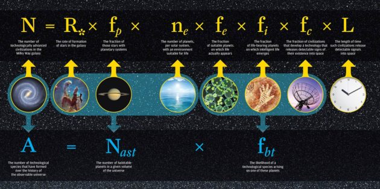

| The Frank-Sullivan Equation |
|
|
Another alternative modification to the Drake equation.
The Drake Equation, at the top of figure 21, multiplies several factors (fractions) to come up with an estimate of the number of extraterrestrial civilizations in the Milky Way that may currently be transmitting radio signals. The Frank-Sullivan Equation, underneath, eliminates the time factor L and just estimates the number of advanced cvilizations likely to have developed over the history of the observable universe, using the remaining factors.
http://www.geekwire.com/2016/aliens-civilizations-existed-can-bet-astrophysicists/
Figure 021 - Credit: University of Rochester.
